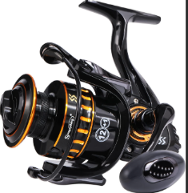
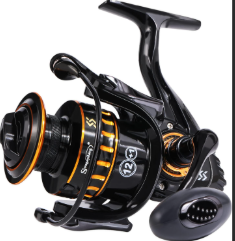

Stock available:6
Okuma new Inspira ISX Spinning Reel, a game-changing innovation in the spinning reel market.
Its metal Torsion Control Armor (TCA) technology provides up to 5 times greater torsion and flex resistance with a double arm body design.
Enjoy improved stability, smoothness and power with TCA construction, ensuring perfect internal alignment. The Inspira ISX is stronger, more efficient and guaranteed to deliver an outstanding fishing experience.
Okuma new Ceymar HD spinning reel is designed based on the concept of Power!
It delivers not only strength, but also an unrivaled lightweight and smooth feel.
| Hand direction | Right and Left | Weight | 278g |
|---|---|---|---|
| Gear ratio | 5:2:1 | Material | Alumnium |
| Type | Inspira ISX Spinning Reel | Model Number | AV-8000Csd |